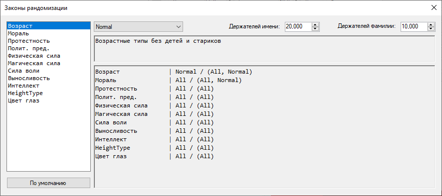

Tropegen
| Tropegen | |
|---|---|
 | |
| Редактор персонажа | |
| eXtended Notes | |
| Следующая программа | XNWP |
| Разработка | |
| Статус | Не поддерживается |
| Разработка | 08.04.21 — 22.06.21 |
| Последняя версия | 1.4.0 от 22.06.21 |
| Написан на | C# 7.3 (.NET Framework 4.7.1) |
| Платформы | Windows |
| Дополнительно | |
| Скриптовый язык | PascalABC.NET |
| Статистика | |
| Строк кода | .cs: 4060 |
| .cs (wf): 3327 | |
| .pas: 71 | |
| Коммитов | 28 |
Tropegen — генератор случайных персонажей, поддерживающий сохранение и загрузку списков персонажей, а также содержащий заранее определённые правила.
Особенности
- Хранение списков в бинарном виде (малое потребление памяти + быстродействие)
- Выбор законов рандомизации (может кастомизироваться .xml файлом)
Окно смены законов
- Встроенная большая база данных имён и фамилий
Заранее определенные характеристики:
- Базовые: имя, фамилия, пол, дата рождения и возраст
- Личности: мораль, этика, эгоистичность, идейность, протестность, политичность, эмпатия и эмоциональность
- Внешности: рост, вес (+ процент мышц и жира), цвет глаз, цвет волос (или RGB искусственный), длина волос, привлекательность
- Социльные характеристики: статус, распутство, ответственность, преданность, адаптивность, доверчивость, юмор
- Шкалы: физическая и магическая сила, сила воли, выносливость и интеллект